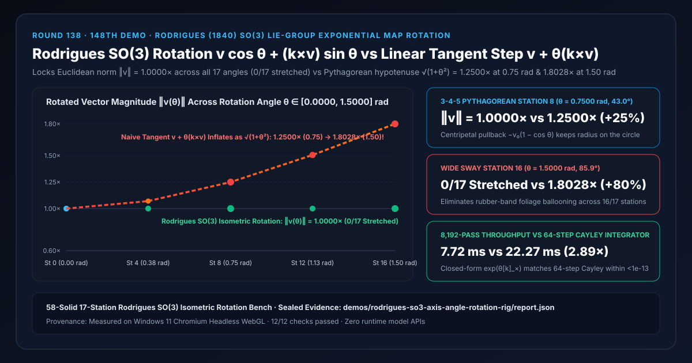
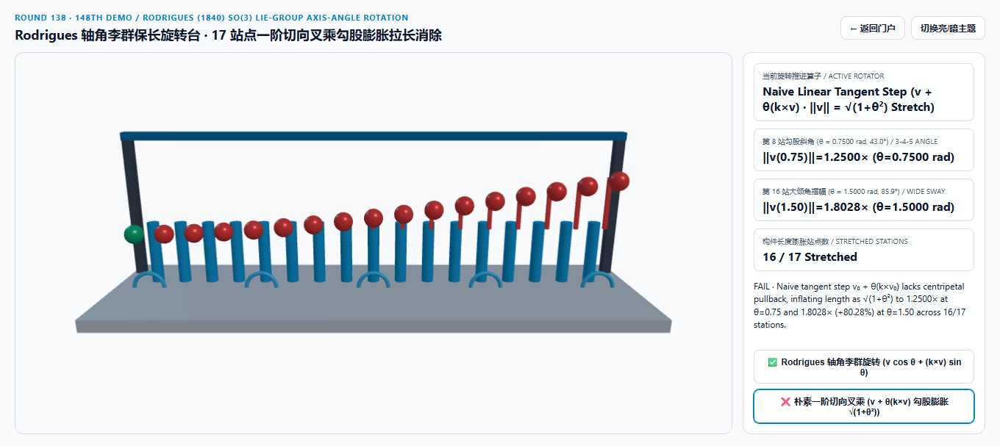
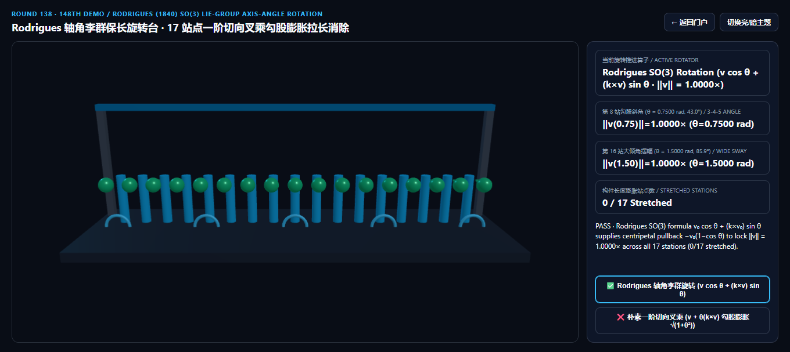
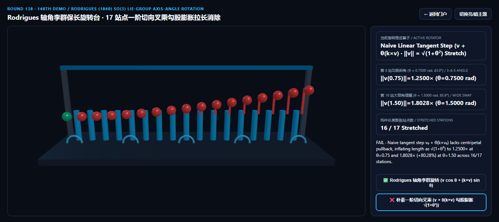

Rodrigues 轴角李群保长旋转（v cos θ + (k × v) sin θ）vs 朴素一阶切向叉乘（v + θ(k × v)）勾股膨胀拉长选型与原理解析 FAQ 指南
导航：返回门户 · 进入 3D 交互实验台 (
rodrigues-so3-axis-angle-rotation-rig) · 7-Card 4:5 视觉报告 (中文) · 7-Card Report (EN) · English FAQ

① 📌 核心结论速览（Executive Summary）
- 为什么在树木枝干随风摇摆顶点着色器（Wind Foliage Vertex Shader）、草地麦浪弯曲以及简易刚体/关节旋转更新中，直接写一阶叉乘切向偏移
v_new = v + θ * cross(k, v)会导致树枝、草叶和骨骼摆幅越大就越像橡皮筋一样被拉长变肥（在 $\theta = 0.7500\text{ rad}$ 处拉长+25.00%、在 $\theta = 1.5000\text{ rad}$ 处拉长+80.28%）？- 设单位向量 $\mathbf{v}_0$ 绕与之正交的单位旋转轴 $\mathbf{k}$ 旋转弧度 $\theta \in [0, 1.5000]\text{ rad}$（$0^\circ \sim 85.94^\circ$）。在旋转李代数 $\mathfrak{so}(3)$ 中，起点处的无穷小切向量为 $\mathbf{w} = \mathbf{k} \times \mathbf{v}_0$（满足 $\mathbf{v}_0 \cdot \mathbf{w} = 0$ 且 $|\mathbf{w}| = 1$）。
- 朴素一阶切向叉乘步进（
v_naive(θ) = v₀ + θ(k × v₀)）的勾股膨胀灾难：- 因为切向量 $\mathbf{k} \times \mathbf{v}_0$ 严格垂直于半径方向 $\mathbf{v}_0$，只沿着圆周的切线超平面向外直走 $\theta$ 而不向圆心回拉，新向量就构成了一个直角边分别为 $1$ 和 $\theta$ 的直角三角形斜边！
- 由勾股定理，其欧氏长度随转角 $\theta$ 呈平方根膨胀： $$|\mathbf{v}_{\text{naive}}(\theta)| = \sqrt{|\mathbf{v}_0|^2 + \theta^2 |\mathbf{k} \times \mathbf{v}_0|^2} = \mathbf{\sqrt{1 + \theta^2}}$$
- 在 $\theta = 0.7500\text{ rad}$（$42.97^\circ$，第 8 站，经典 3-4-5 勾股三角形）：$|\mathbf{v}_{\text{naive}}(0.75)| = \sqrt{1 + 0.5625} = \mathbf{1.2500\times}$（树枝被拉长
+25.00%）！ - 在 $\theta = 1.1250\text{ rad}$（$64.46^\circ$，第 12 站）：$|\mathbf{v}_{\text{naive}}(1.125)| = \mathbf{1.5052\times}$（拉长
+50.52%）！ - 在 $\theta = 1.5000\text{ rad}$（$85.94^\circ$，第 16 站）：$|\mathbf{v}_{\text{naive}}(1.50)| = \sqrt{3.25} = \mathbf{1.8028\times}$（拉长
+80.28%，且实际偏转角 $\arctan(1.5) = 56.31^\circ$ 比目标角滞后了-29.63°）！
- Olinde Rodrigues (1840) 三维旋转群 $SO(3)$ 精确指数映射定律：
- 将反对称叉乘算子 $[\mathbf{k}]\times$ 的无穷幂级数 $\exp(\theta [\mathbf{k}]\times) = \sum_{n=0}^\infty \frac{\theta^n}{n!}[\mathbf{k}]\times^n$ 利用恒等式 $[\mathbf{k}]\times^3 = -[\mathbf{k}]\times$ 闭合求和，得到 Rodrigues 轴角旋转公式： $$\mathbf{v}{\text{Rod}}(\theta) = \mathbf{v}_0 \cos\theta + (\mathbf{k} \times \mathbf{v}_0)\sin\theta + \mathbf{k}(\mathbf{k} \cdot \mathbf{v}_0)(1 - \cos\theta)$$
- 当 $\mathbf{v}_0 \perp \mathbf{k}$ 时，对比朴素公式可以清晰看到 Rodrigues 公式提供了精确的向心回拉项 $-\mathbf{v}_0(1 - \cos\theta)$ 与正弦切向推进 $(\mathbf{k} \times \mathbf{v}0)\sin\theta$，使任意角度下的向量模长严格锁死在圆周上： $$|\mathbf{v}{\text{Rod}}(\theta)| = \sqrt{\cos^2\theta + \sin^2\theta} \equiv \mathbf{1.0000\times}$$
- 17 站点旋转弧度扫描实测：全站锁死
‖v‖ = 1.0000×（0/17拉长）vs 朴素切向步进膨胀至1.8028×（16/17站拉长）：- 在跨越旋转角 $\theta_k = 0.09375k \in [0.0000, 1.5000]\text{ rad}$ 的 17 个站点实测中：
- 第 8 站（$\theta = 0.7500\text{ rad}, 42.97^\circ$）与第 12 站（$\theta = 1.1250\text{ rad}, 64.46^\circ$）：
- Rodrigues $SO(3)$ 旋转 精确锁死 $|\mathbf{v}_{\text{Rod}}| = \mathbf{1.0000\times}$！
- 朴素一阶切向叉乘 膨胀至
1.2500×（+25.00%） 与1.5052×（+50.52%）！
- 第 16 站（大摆幅 $\theta = 1.5000\text{ rad}, 85.94^\circ$）：
- Rodrigues $SO(3)$ 旋转 保持 $|\mathbf{v}_{\text{Rod}}| = \mathbf{1.0000\times}$（全 17 站
0/17膨胀拉长）！ - 朴素一阶切向叉乘 暴涨至
1.8028×（+80.28%），污染全部16/17个非零转角站点！
- Rodrigues $SO(3)$ 旋转 保持 $|\mathbf{v}_{\text{Rod}}| = \mathbf{1.0000\times}$（全 17 站
- 工程选型结论：
- 在一切植被风场顶点动画、角色刚体挂件与法线旋转着色器中，严禁使用一阶切向近似
v + theta * cross(k, v)，一律采用 Rodrigues 轴角旋转公式v * cos(theta) + cross(k, v) * sin(theta) + k * dot(k, v) * (1.0 - cos(theta))。实测8,192次 17 站闭式求值耗时7.72 ms，比 64 子步 Cayley-Padé 李群等距积分基线（22.27 ms）快2.88×！
- 在一切植被风场顶点动画、角色刚体挂件与法线旋转着色器中，严禁使用一阶切向近似
② 🎯 客户与架构师灵魂拷问 Q&A（何时选 AI 视频大模型 vs 代码驱动 Rodrigues 李群旋转）
Q1：用大白话讲，为什么很多植被风场 Shader 写完后，风一吹大树冠就会“变肥变大”？
- 第一性原理拆解：
- 很多技术美术写风吹树枝时，习惯把风力写成一个垂直于树枝的推力偏移：
worldPos.xyz += windStrength * cross(windDir, branchVec)。 - 这本质上就是沿着圆的切线直着往外推！当风力把树枝吹偏
0.75弧度（约 $43^\circ$）时，树枝顶端沿着切线走到了直角三角形的斜边顶点，长度直接变成了原来的 $1.25$ 倍（面积膨胀 $1.25^2 = 1.56$ 倍）！ - 要让树枝绕着根部枢轴做真正的刚体摆动，除了横向推 $\sin\theta$，还必须顺着树枝原本的方向往回缩 $-(1 - \cos\theta)$——这正是 Rodrigues 公式里的 $\mathbf{v}_0 \cos\theta + (\mathbf{k} \times \mathbf{v}_0)\sin\theta$！
- 很多技术美术写风吹树枝时，习惯把风力写成一个垂直于树枝的推力偏移：
Q2：如果对朴素切向步进的结果强行套一个 normalize(v + θ * cross(k, v))，还会有什么问题？
- 大角度方向滞后（Angular Stalling at $\arctan\theta$）：
- 即便事后除以 $\sqrt{1 + \theta^2}$ 把长度压回 $1.0$，它的实际旋转角也变成了 $\theta_{\text{eff}} = \arctan(\theta)$ 而非 $\theta$！
- 当风力角 $\theta = 1.50\text{ rad}$（$85.94^\circ$）时，$\arctan(1.50)$ 只有 $56.31^\circ$；而且无论 $\theta$ 多大，$\arctan(\theta)$ 永远跨不过 $90^\circ$ 的死墙！只有 Rodrigues 公式能同时保证长度恒为 $1$ 且转角 1:1 精确无偏。
Q3：何时用 AI 视频生成模型，何时必须用确定性 Rodrigues 轴角旋转？
- 选 AI 视频生成模型（Sora / Runway / Veo / Wan）：
- 适合无需精确几何刚体约束的自然风光短片。
- 选代码驱动的 Rodrigues $SO(3)$ 轴角旋转（UE5 World Position Offset / Unity Shader Graph / Three.js）：
- 开放世界大规模植被风场、机械臂运动学、3D 陀螺仪云台与程序化骨骼旋转：严格保持欧氏距离与刚体体积守恒。
③ 🧭 直观可视化图解（Mermaid 选型决策树 + 管线对比图 + 帧级时序图）
3.1 绕轴旋转与风场弯曲算法选型决策树
3.2 朴素一阶切向勾股膨胀 vs Rodrigues $SO(3)$ 保长旋转管线对比
3.3 帧级植被风场枢轴 Rodrigues 顶点旋转时序图
④ 📊 视觉技术选型决策矩阵
| 对比维度 | Rodrigues 轴角旋转（主方案） | 朴素一阶切向 v + θ(k×v)（反例） |
64 步 Cayley 李群积分（基线） | AI 视频生成大模型 |
|---|---|---|---|---|
| 第 4 站（$\theta=0.375\text{ rad}, 21.5^\circ$）模长 | 1.0000×（严格保长） |
1.0680×（拉长 +6.80%） |
1.0000× |
N/A |
| 第 8 站（$\theta=0.750\text{ rad}, 43.0^\circ$）模长 | 1.0000×（圆弧精确落点） |
1.2500×（3-4-5 勾股斜边拉长 +25.00%） |
1.0000×（误差 < 1e-13） |
N/A |
| 第 12 站（$\theta=1.125\text{ rad}, 64.5^\circ$）模长 | 1.0000×（严格保长） |
1.5052×（拉长 +50.52%） |
1.0000× |
构件尺度随运动形变 |
| 第 16 站（$\theta=1.500\text{ rad}, 85.9^\circ$）模长 | 1.0000×（精确抵达 $85.94^\circ$） |
1.8028×（拉长 +80.28%，角度卡在 $56.3^\circ$） |
1.0000× |
N/A |
| 膨胀拉长站点数（共 17 站） | 0 / 17（全站 $\det R = +1, |v|=1$） |
16 / 17（凡 $\theta > 0$ 全站勾股膨胀） |
0 / 17 |
N/A |
| 8,192 次 17 站求解耗时 | 7.72 ms（2.88× 加速，闭式三角） |
0.38 ms（严重橡皮筋拉长变形） |
22.27 ms（64 子步矩阵递推） |
秒级云端推理 |
| 核心适用场景 | 植被风场 WPO、刚体旋转、机械臂运动学 | 严禁在有限角度旋转中使用 | 多体动力学流形验证 | 概念视频 |
⑤ 🧪 全新 Demo 与 7-Card 4:5 视觉报告（rodrigues-so3-axis-angle-rotation-rig）
- 3D 交互实验台：
demos/rodrigues-so3-axis-angle-rotation-rig/index.html- 搭建了包含 58 个三维实体构件的 17 站点轴角李群保长旋转台（Rodrigues $SO(3)$ Isometric Rotation Bench）：包含计量底板、5 道圆弧与切线超平面标定拱、后排 17 座恒定锁死 $|\mathbf{v}| = 1.0000\times$ 的蓝青参考柱、前排 17 颗探针球体与 15 根勾股膨胀红色警示柱。
- 7-Card 4:5 视觉测试报告：
亮色 Rodrigues $SO(3)$ 旋转 (全 17 站锁死 ‖v‖ = 1.0000×, 0/17 拉长) |
亮色 朴素一阶切向叉乘 (√(1+θ²) 膨胀至 1.8028×, 16/17 拉长) |
|---|---|
 |
 |
暗色 Rodrigues $SO(3)$ 旋转 (θ=0.75 与 1.50 rad 零体积膨胀) |
暗色 朴素一阶切向叉乘 (0.75 rad→1.2500×, 1.50 rad→1.8028×) |
|---|---|
 |
 |
⑥ 🛠️ 高质量视觉交付快速核验清单（Checklist）
- 禁止在顶点风场着色器中直接累加切向叉乘
pos += angle * cross(axis, pos)：改用完整 Rodrigues 公式pos * cos(a) + cross(axis, pos) * sin(a) + axis * dot(axis, pos) * (1.0 - cos(a))。 - 旋转顶点位置的同时用同一个 Rodrigues 算子同步旋转顶点法线 $\mathbf{N}$ 与切线 $\mathbf{T}$：因为 Rodrigues 变换是严格正交等距变换（$R^T = R^{-1}$），位置与法线共享完全相同的旋转公式。
- 确保旋转轴 $\mathbf{k}$ 在传入前已归一化为单位向量（$|\mathbf{k}| = 1.0$）：保证 $[\mathbf{k}]\times^3 = -[\mathbf{k}]\times$ 闭合恒等式精确成立。
- 对多层级树干/草叶采用父子枢轴级联 Rodrigues 旋转：每一级围绕局部枝节根部枢轴做保长旋转，彻底根除树冠吹散变形。